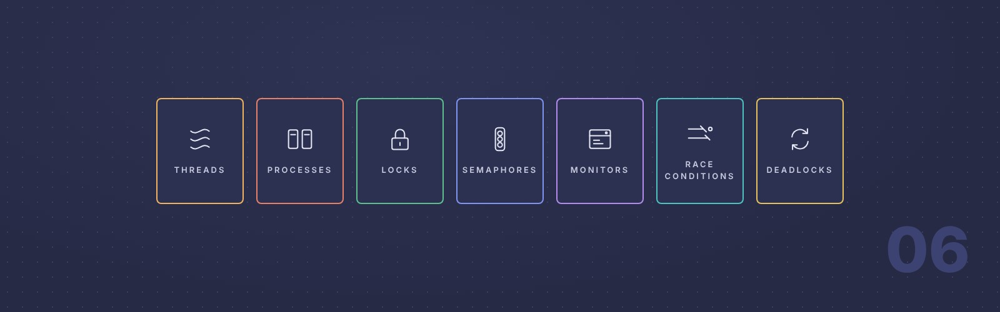

Unit 6: Concurrency and Parallelism in Object-Oriented Design
In brief: I built a bank account in Python that shows a race condition, an overdraft caused by a time-of-check to time-of-use bug and a deadlock, each beside its fix, with 32 tests. The fixed account is a monitor: its balance, lock and condition variable live in one object, and transfers lock accounts in a fixed order. The main lesson was that a concurrency test that passes proves little: the obvious stress test missed the race until the interleaving was forced.

This unit introduces concurrency and parallelism: threads, processes and synchronisation, object-oriented ways of writing thread-safe code, and the common problems of race conditions and deadlocks. Its practical exercise is a multi-threaded bank account in Python made safe with threading locks. My account, its tests and a walkthrough notebook are the unit’s artefact. My seminar preparation and reading notes follow.
Reflection
Structured using the What? So what? Now what? model (Rolfe, Freshwater and Jasper, 2001).
What?
Unit 6 moved from how objects are designed to what happens when several threads use them at once. I read Section 2 of Nguyen (2022), ‘Concurrency and Parallelism’, which runs from chapter 7 to chapter 15, giving most attention to chapters 12 (Deadlocks) and 14 (Race Conditions), together with the second section of chapter 6 on setting up JAX, and McDonald (2022) chapters 17 and 20. For the practical exercise I built a bank account in Python that shows a race condition, an overdraft caused by a time-of-check to time-of-use bug and a deadlock, each beside its fix, with a semaphore-limited teller desk and a withdrawal that waits on a condition variable. It has 32 tests (Artefact 1).
So what?
The most useful surprise came before I wrote a lock. McDonald (2022, ch. 17) disassembles count += 1 to show that it is a read, an add and a write, and therefore not atomic. Yet a stress test of eight threads lost nothing on Python 3.13, even with the thread switch interval at its minimum. The race appeared only when I put a pause between the read and the write, which is where real code does its work. McDonald warns that a race condition ‘can hide in plain sight’ (2022, ch. 17), and here it did. The behaviour belongs to one interpreter release, and PEP 703 makes the GIL optional from Python 3.13 (Gross, 2023), so code that is safe only by accident may not stay safe. I rewrote the tests to use a threading.Barrier that forces the harmful interleaving, which turns a race that might happen into one that always does. This also follows McDonald’s advice on flaky tests (2022, ch. 20): a test that fails one run in fifty teaches people to ignore it.
Coverage taught the same lesson. The suite reaches 98% of statements and branches, but the first stress test reached the same lines and missed the bug. Marick’s warning, quoted by McDonald (2022, ch. 20), that coverage cannot show what a suite fails to test applies with extra force here, because interleavings are not lines of code.
The second insight concerned encapsulation. Nguyen (2022, ch. 14) argues that ‘locks do not lock anything’: they work only if every piece of code that touches the data agrees to use them. Object-oriented design offers an answer. In BankAccount the balance, the lock and the condition variable are private to one object and every public method takes the lock, which is the monitor structure Hoare (1974) proposed. A caller cannot forget a lock it never sees. Python privacy is only a convention, though, and one test records that writing account._balance directly still bypasses everything, so the guarantee is as strong as the team’s discipline. The same reasoning applied to security. The overdraft is the race MITRE (2026) catalogues as CWE-367, and the fix was not a better check but doing the check and the debit inside one critical section.
Deadlock turned out to be a design decision rather than a coding slip. Nguyen (2022, ch. 12) explains the four conditions identified by Coffman, Elphick and Shoshani (1971) and removes the circular wait by ranking resources, and he names bank transfers as an example. My naive transfer, locking source then target, deadlocked whenever two opposite transfers met. Ordering the locks by account number fixed it, and a ring of five accounts each paying its neighbour, the dining philosophers in banking form, completed every time. McDonald’s first remedy, a timeout on acquire(), was less satisfactory in practice. In my notebook a hang became an abandoned transfer that the caller has to retry, and repeated retries invite livelock. His second suggestion, releasing another thread’s lock by force, seems more dangerous still, as he concedes, because it reintroduces the race the lock was there to prevent. Ranking has a cost too, which a limit test records: transfers between the same pair of accounts take turns, which bears out Nguyen’s observation that enough locks make a concurrent program sequential.
Finally, a benchmark separated concurrency from parallelism: four threads counting primes took as long as one, while four processes ran three times faster, as both books’ accounts of the GIL predict. For a bank account correctness under any interleaving matters more than speed.
Now what?
In future tests of shared state I will force interleavings with barriers rather than hope for them, and I will treat a concurrency test that has never been seen to fail as unproven. For the capstone project I intend to keep each lock inside the object that owns the data, document a lock order whenever an operation needs more than one lock, and pass messages through queue.Queue where objects do not need to share state, as both Lott and Phillips (2021, ch. 14) and McDonald (2022, ch. 17) recommend. I also want to run the suite on the free-threaded build of Python to see whether the += race appears there. I will bring two questions to the seminar: whether free-threaded Python makes monitor-style classes a requirement rather than good practice, and when a semaphore is a better way to limit work than a bounded queue.
Artefact 1: A Thread-Safe Bank Account
Practical exercise. The code is in bank_account.py, 32 unit tests and the module’s doctests are in test_bank_account.py, and the walkthrough notebook is unit6_concurrency.ipynb. Needs Python 3.10 or later and no third-party packages; run the tests with python -m unittest -v test_bank_account and the demonstration with python bank_account.py. bank_account.py also passes mypy --strict, and the tests cover 98% of its statements and branches.
The seminar asks for a simple multi-threaded application, such as a bank account with concurrent deposits and withdrawals, made thread safe with threading locks. To show what the locks are for, the module keeps the broken versions beside the fixed ones. UnsafeAccount has no lock, and naive_transfer takes two locks in an inconsistent order. BankAccount is the thread-safe account, written as a monitor, and TellerDesk uses a semaphore to let a fixed number of operations run at once. Figure 1 shows how they relate.
![UML class diagram of the bank account. BankAccount is labelled as a monitor: it keeps a private account number, balance, history list, threading.Lock and a Condition built on that lock. Its public interface is a read-only balance, number and owner, deposit, withdraw, withdraw_when_funded with a timeout, transfer_to, which locks both accounts in account-number order, and history, which returns a snapshot. Private helpers _require, _credit and _debit assume the caller holds the lock. BankAccount owns zero or more frozen Transaction records. UnsafeAccount, marked broken on purpose, has a public unguarded balance and a pause hook, and its deposit and withdraw lose updates and overdraw. TellerDesk holds a BoundedSemaphore and a lock protecting its busy count. The function naive_transfer, also broken on purpose, locks source then target and raises DeadlockDetected on timeout. The client main uses all of them.](artefacts/unit6/figures/u6_class_diagram.png)
Figure 1: Class diagram of the bank account artefact.
Table 1 maps each part of the exercise to the code that meets it and the test or notebook result that shows it.
| Requirement | Implementation | Evidence |
|---|---|---|
| Concurrent deposits and withdrawals | Threads call deposit() and withdraw() on one shared account | Stress tests with eight threads and the interpreter’s switch interval at its minimum |
| Show the race condition | UnsafeAccount reads, pauses and writes; its withdrawal checks, pauses and debits | With a barrier forcing the interleaving, two deposits of 100 leave 100 and two withdrawals of 100 from 100 leave −100, every time |
Thread safety with threading.Lock | BankAccount keeps its lock private and takes it in every public method, so a check and its update are one step | 8,000 concurrent deposits give exactly 8,000.00; fifty withdrawals of 10 from 100 give ten successes and forty refusals |
| Show and fix a deadlock | naive_transfer locks source then target; transfer_to locks the lower account number first | Opposite naive transfers time out holding one lock each; 2 × 5,000 opposite ranked transfers and a ring of five accounts always finish with money conserved |
| Other synchronisation mechanisms | A condition variable for a withdrawal that waits for funds; a bounded semaphore for a desk with three tellers | A waiting withdrawal completes after a deposit or times out; no more than three customers are ever served at once |
Table 1: Each part of the exercise and the evidence for it.
Concurrency failures depend on scheduling, so a test that merely starts threads can pass by luck. The race and deadlock tests therefore use a threading.Barrier to force the harmful interleaving, and every thread is joined with a timeout so that a deadlock fails a test rather than hanging the suite. Further tests check that amounts are validated (floats, NaN and fractions of a penny are refused), that account numbers stay unique when accounts are opened concurrently, and that no public attribute exposes the lock. Two limit tests record what the design does not achieve: Python’s privacy is a convention, so writing _balance directly bypasses the lock, and ranked locking makes transfers between the same two accounts take turns. An extract of the notebook’s output:
one after another 0.28 s
four threads 0.30 s speed-up x0.9 (the GIL: one thread at a time)
four processes 0.09 s speed-up x3.1
count += 1, 8 threads x 10,000: 80000 every run (the race stays hidden)
UnsafeAccount, 8 threads x 1000: 1013.00, expected 8000
BankAccount, 8 threads x 1000: 8000.00, expected 8000
two withdrawals of 100 from 100
UnsafeAccount: balance -100.00, refused []
BankAccount: balance 0.00, refused ['InsufficientFunds']
naive_transfer: ['DeadlockDetected'] after 0.50 s
transfer_to: 2 x 5000 opposite transfers in 0.04 s, total 10000.00
Lock acquired twice by the same thread: False
RLock acquired twice by the same thread: TrueSeminar Preparation
Concurrency and parallelism
Concurrency is about managing several tasks at once: their lifetimes overlap, and the program has to stay correct whatever order their steps run in. Parallelism is about executing several tasks at the same instant on separate cores. McDonald (2022, ch. 17), following Rob Pike, describes concurrency as the composition of tasks and parallelism as running them simultaneously, and notes that parallelism can be part of a concurrent design but is not the same thing. Nguyen (2022, ch. 7) presents concurrency as a way of dealing with slow resources by moving on to other work while waiting, which is why it suits input and output. A program can be concurrent on a single core, and the bank account is concurrent whether or not its threads happen to run in parallel.
Threads and processes
Table 2 compares the two, drawing on Nguyen (2022, ch. 8 and 15), Lott and Phillips (2021, ch. 14) and McDonald (2022, ch. 17).
| Threads | Processes | |
|---|---|---|
| Memory | Share the memory of one process, so objects are shared by default | Each has its own memory; data has to be copied (pickled) or placed in explicit shared memory |
| In CPython | One Global Interpreter Lock per interpreter, so only one thread runs Python bytecode at a time | One interpreter and one GIL per process, so they can run on separate cores |
| Cost | Cheap to start and switch between | Slower to start, use more memory, and communication between them is slower |
| Main risk | Race conditions on shared state | Overhead, and data that cannot be pickled |
| Use when | The work is I/O-bound: network requests, files, waiting for users | The work is CPU-bound and can be divided into independent parts |
| Python tools | threading, ThreadPoolExecutor, queue.Queue | multiprocessing, ProcessPoolExecutor, multiprocessing.Queue |
Table 2: Threads and processes compared.
My benchmark confirmed the CPython column: four threads counting primes were no faster than one, while four processes were three times faster. Two points complicate the usual summary. First, the GIL is no longer fixed: PEP 703 makes it optional from Python 3.13 (Gross, 2023), whereas Lott and Phillips (2021, ch. 14) still describe it as impossible to turn off. Second, the GIL does not make Python code thread safe. It protects the interpreter’s own structures, not the invariants of my objects, and Nguyen (2022, ch. 8) shows a shared counter in multiprocessing losing updates even though it was created with lock=True, because counter.value += 1 is still a read followed by a write.
Object-oriented approaches to thread-safe code
Encapsulation is the main tool. If a shared object keeps its state private and offers only operations that take its lock, the lock cannot be forgotten by callers, which answers Nguyen’s (2022, ch. 14) warning that ‘locks do not lock anything’ unless every user agrees to take them. Abstraction helps by making each operation a whole business step, such as withdraw() or transfer_to(), rather than separate get_balance() and set_balance() calls that a caller would have to combine safely. Immutability removes the problem altogether: the account’s Transaction records are frozen dataclasses and history() returns a tuple, so they can be shared without a lock. Finally, objects can avoid sharing state at all by passing messages through a thread-safe queue, which Lott and Phillips (2021, ch. 14) and McDonald (2022, ch. 17) both recommend as the safest default, and which Ayeva and Kasampalis (2024, ch. 7) build into the Thread Pool and Worker Model patterns.
Locks, semaphores and monitors
| Mechanism | What it does | Python | Use in the artefact |
|---|---|---|---|
| Lock (mutex) | Admits one thread at a time to a critical section | threading.Lock; RLock can be re-acquired by the thread that holds it | Each BankAccount has one, taken by every public method |
| Semaphore | A counter that admits up to n threads; a lock is the case n = 1 | threading.Semaphore, BoundedSemaphore | TellerDesk serves at most three customers at once |
| Monitor | An object that combines data, the lock that guards it and conditions to wait on, so that only one thread is active inside it (Hoare, 1974) | A class with a private Lock and a threading.Condition on that lock | BankAccount itself; withdraw_when_funded() waits until a deposit makes the withdrawal affordable |
Table 3: Synchronisation mechanisms.
The choice follows from the question being asked. A lock protects an invariant: the balance must never be read half-updated. A semaphore limits a resource: there are only three tellers, or ten database connections. It does not protect data, which is why TellerDesk still needs a lock for its own counter. A monitor is less a separate primitive than a way of organising the other two inside a class, and it is the form that object-oriented design leads to naturally.
Race conditions and deadlocks
A race condition occurs when the result depends on the order in which threads run, and the data is corrupted when the order is unlucky (Nguyen, 2022, ch. 14). The bank account shows two kinds: a lost update, where two deposits read the same balance, and a time-of-check to time-of-use bug, where two withdrawals both pass the balance check before either debits. The second is a security weakness in its own right, listed by MITRE (2026) as CWE-367, and in a bank it is a double spend. The solution is mutual exclusion: make the check and the update one critical section.
A deadlock occurs when threads wait for each other for ever. It needs all four of the conditions identified by Coffman, Elphick and Shoshani (1971): mutual exclusion, hold and wait, no preemption and circular wait, so prevention means removing one of them. Table 4 summarises the options I found in the readings.
| Approach | Condition removed | Cost |
|---|---|---|
Acquire locks in a global order (Nguyen, 2022, ch. 12), as transfer_to() does | Circular wait | Every caller must know the order; operations on the same resources become sequential |
Timeout on acquire(), then release and retry (McDonald, 2022, ch. 17) | Hold and wait | A hang becomes a failure the caller must handle; retries can livelock |
| Pass messages through a queue instead of sharing state | Mutual exclusion on the shared object | A redesign; blocking on an empty queue can still starve a thread |
| Remove the locks (Nguyen, 2022, ch. 12) | Mutual exclusion | Brings back the race conditions unless the data really is independent |
Table 4: Ways of preventing deadlock.
Two related problems are worth naming. In a livelock the threads keep acting but make no progress, like Nguyen’s (2022, ch. 12) two polite diners who each wait for the other to eat first. Starvation is defined differently in the two books: McDonald (2022, ch. 17) uses it for a thread waiting on a future or join that never returns, while Nguyen (2022, ch. 13) uses the scheduling sense, a thread that is always passed over, as in the readers-writers problem.
Environment and practice
threading, queue, multiprocessing and concurrent.futures are part of the standard library, so nothing needs installing. I practised with the snippets in the notebook, starting from the smallest example of creating and joining threads:
import threading
def worker(name, results, lock):
with lock:
results.append(f"{name} ran in {threading.current_thread().name}")
results, lock = [], threading.Lock()
threads = [threading.Thread(target=worker, args=(i, results, lock)) for i in range(3)]
for t in threads: t.start()
for t in threads: t.join()
print(results)Questions to bring to the seminar
- When a race condition does not show up in testing, as
+=did not for me on Python 3.13, what techniques other than forcing interleavings with barriers do professional teams use to find it? - Does the free-threaded build of Python make monitor-style classes a requirement rather than good practice, and how much existing code relies on the GIL by accident?
- When should a semaphore be preferred to a bounded queue for limiting work?
- Ordering locks by account number works for two accounts. How do large systems such as databases decide lock order, or do they detect deadlocks and abort a transaction instead?
- Is a timeout a legitimate way to avoid deadlock in a financial system, given that it turns a hang into a failed transaction?
Reading Notes
Nguyen (2022), Section 2, Concurrency and Parallelism, chapters 7–15 (required, with chapters 12 and 14 named). The module lists ‘Chapter 6 (Section 2 only)’; the book’s Section 2 is chapters 7 to 15, so I read those, and I also read the second section of chapter 6. Chapter 7 introduces asynchronous programming for slow, unpredictable resources, with callbacks, futures, asyncio coroutines and reactive programming. Chapter 8 divides parallel work into shared-memory and distributed-memory models, contrasts threads with processes, explains why the GIL stops threads from speeding up Python code, and shows a shared multiprocessing.Value losing updates until a lock is added. Chapters 9 to 11 apply threads to web requests, processes to image processing and asyncio to network communication. Chapter 12 states the four Coffman conditions, simulates the dining philosophers, and fixes the deadlock by sorting locks before acquiring them; it notes that enough locks make a program sequential, and that a livelock is a deadlock in which the threads keep moving. Chapter 13 treats starvation through scheduling and the readers-writers problem. Chapter 14 defines race conditions and critical sections, fixes a racing counter with a lock, and gives the most important warning for this unit, that locks are not connected to the data they protect; it ends with race conditions in security (time of check to time of use), operating systems and networking. Chapter 15 explains why CPython has a GIL, what it costs, and ways around it.
Nguyen (2022), chapter 6, section 2, ‘Getting JAX up and running’ (required). A short section on installing JAX, or using it through Google Colab, which presents JAX as ‘functional transformations’ that compile, vectorise and parallelise ordinary functions. Its relevance to this unit is indirect but useful: parallelism comes easily when functions are pure and share no mutable state, which is the opposite end of the scale from a shared bank account.
McDonald (2022), chapter 17, Threading and Parallelism (required). Clear on the definitions: threading gives concurrency and suits I/O-bound work, while multiprocessing gives parallelism for CPU-bound work. Its explanation of race conditions through the bytecode of count += 1, its contrast of coarse-grained and fine-grained locking, and its treatment of deadlock, livelock, self-deadlock and RLock shaped the artefact directly. It recommends passing messages through queues as the default way for threads to share data. I disagree with one suggestion, forcibly releasing another thread’s lock to break a deadlock, which McDonald himself admits can create a race condition.
McDonald (2022), chapter 20, Testing and Profiling (required). Covers pytest, fixtures, mocking and parametrisation, flaky tests, coverage, tox, timeit and cProfile. The parts on flaky tests and on the limits of coverage, quoting Marick, changed how I tested the artefact, and its claim that ‘all claims of performance are mythical until proven otherwise’ is why the notebook measures the threads-versus-processes speed-up and the cost of the lock rather than asserting them. The artefact keeps unittest for consistency with earlier units, and the tests also run under pytest.
Lott and Phillips (2021), chapter 14, Concurrency (additional). Describes the many problems with threads, shared memory, the GIL and thread overhead, then multiprocessing, futures and asyncio, and ends with its own dining philosophers benchmark. Used for the threads and processes comparison and the case for queues.
Ayeva and Kasampalis (2024), chapter 7, Concurrency and Asynchronous Patterns (additional). Presents Thread Pool, Worker Model, Future and Promise and Observer in reactive programming as patterns, and lists the Actor model, coroutines, message passing and backpressure. It links this unit to the pattern units: a thread pool is a reusable object that hides the cost of creating threads, much as a factory hides construction.
References
Ayeva, K. and Kasampalis, S. (2024) Mastering Python design patterns: craft essential Python patterns by following core design principles. 3rd edn. Birmingham: Packt Publishing. Chapter 7. Available at: https://www.oreilly.com/library/view/mastering-python-design/9781837639618/ (Accessed: 27 November 2026).
Coffman, E.G., Elphick, M.J. and Shoshani, A. (1971) ‘System deadlocks’, ACM Computing Surveys, 3(2), pp. 67–78. doi: 10.1145/356586.356588.
Gross, S. (2023) PEP 703 – Making the Global Interpreter Lock optional in CPython. Python Software Foundation. Available at: https://peps.python.org/pep-0703/ (Accessed: 27 November 2026).
Hoare, C.A.R. (1974) ‘Monitors: an operating system structuring concept’, Communications of the ACM, 17(10), pp. 549–557. doi: 10.1145/355620.361161.
Lott, S.F. and Phillips, D. (2021) Python object-oriented programming: build robust and maintainable object-oriented Python applications and libraries. 4th edn. Birmingham: Packt Publishing. Chapter 14. Available at: https://www.oreilly.com/library/view/python-object-oriented-programming/9781801077262/ (Accessed: 27 November 2026).
McDonald, J.C. (2022) Dead simple Python: idiomatic Python for the impatient programmer. San Francisco, CA: No Starch Press. Chapters 17 and 20. Available at: https://www.oreilly.com/library/view/dead-simple-python/9781098156671/ (Accessed: 27 November 2026).
MITRE (2026) CWE-367: Time-of-check time-of-use (TOCTOU) race condition. Common Weakness Enumeration. Available at: https://cwe.mitre.org/data/definitions/367.html (Accessed: 27 November 2026).
Nguyen, Q. (2022) Advanced Python programming: accelerate your Python programs using proven techniques and design patterns. 2nd edn. Birmingham: Packt Publishing. Chapter 6 (section 2) and Section 2, chapters 7–15. Available at: https://www.oreilly.com/library/view/advanced-python-programming/9781801814010/ (Accessed: 27 November 2026).
Rolfe, G., Freshwater, D. and Jasper, M. (2001) Critical reflection for nursing and the helping professions: a user’s guide. Basingstoke: Palgrave Macmillan.